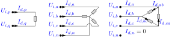

Loads
A load draws a specified power at a bus. Its power may be constant, or vary with voltage (ZIP / exponential). Three connection configurations are supported: single-phase, wye (with neutral return), and delta. Parts 1–5 state the foundational model; part 6 records how BMOPFTools realises it. Symbols are defined in Notation.

1. Data model
A load is an entry of the top-level load object, keyed by its string ID $d$.
| Field | Type | Unit | Req. | Description |
|---|---|---|---|---|
bus | string | – | ✔ | Host bus ID $i$ |
terminal_map | string[] | – | ✔ | Conductor→terminal map $\textcolor{purple}{\mathbf{N}_{d}}$ |
configuration | string | – | ✔ | WYE, SINGLE_PHASE, or DELTA |
p_nom, q_nom | number[] | W, var | ✔ | Nominal per-sub-load active/reactive power |
model | string | – | constant_power (default), constant_current, constant_impedance, zip, exponential | |
v_nom | number[] | V | (zip/exp) | Nominal voltage at which p_nom/q_nom hold |
alpha_z, alpha_i, alpha_p | number[] | – | (zip) | Active ZIP fractions ($\alpha_Z+\alpha_I+\alpha_P=1$) |
beta_z, beta_i, beta_p | number[] | – | (zip) | Reactive ZIP fractions |
gamma_p, gamma_q | number[] | – | (exp) | Active/reactive voltage exponents |
2. Input symbols
| Field | Symbol | Notes |
|---|---|---|
p_nom, q_nom | $\textcolor{red}{P^{\text{nom}}_{d}},\ \textcolor{red}{Q^{\text{nom}}_{d}}$ | per sub-load |
v_nom | $\textcolor{red}{V^{\text{nom}}_{d}}$ | reference voltage |
| ZIP fractions | $\textcolor{red}{\alpha_Z,\alpha_I,\alpha_P},\ \textcolor{red}{\beta_Z,\beta_I,\beta_P}$ | |
| exponents | $\textcolor{red}{\gamma_P},\ \textcolor{red}{\gamma_Q}$ |
A sub-load $k$ is one two-terminal power element of the load: a phase-to-neutral branch (WYE), the single terminal pair (SINGLE_PHASE), or one line-to-line branch (DELTA).
3. Variables
Each sub-load $k$ draws a complex current $\textcolor{blue}{I_{d,k}}$, stacked into $\textcolor{blue}{\mathbf{I}_{d}}$. These are the currents the load contributes to KCL; the neutral return current is not an independent variable.
4. Equality constraints
Sub-load voltage drop and power
Let $\Delta\textcolor{blue}{U_{d,k}}$ be the voltage across sub-load $k$: phase-to-neutral for WYE, the terminal-pair difference for SINGLE_PHASE, line-to-line for DELTA. The complex power the sub-load absorbs is
\[\textcolor{blue}{S_{d,k}} = \Delta\textcolor{blue}{U_{d,k}}\,(\textcolor{blue}{I_{d,k}})^{*} = P_{d,k} + \textcolor{brown}{j}\,Q_{d,k}.\]
Constant power (default) pins it to the nominal setpoint:
\[P_{d,k} = \textcolor{red}{P^{\text{nom}}_{d,k}}, \qquad Q_{d,k} = \textcolor{red}{Q^{\text{nom}}_{d,k}}.\]
Voltage-dependent (ZIP) scales the setpoint by impedance/current/power fractions of the voltage-magnitude ratio $|\Delta\textcolor{blue}{U_{d,k}}|/\textcolor{red}{V^{\text{nom}}_{d,k}}$:
\[\begin{aligned} P_{d,k} &= \textcolor{red}{P^{\text{nom}}_{d,k}}\left(\textcolor{red}{\alpha_Z}\,\frac{|\Delta\textcolor{blue}{U_{d,k}}|^2}{(\textcolor{red}{V^{\text{nom}}_{d,k}})^2} + \textcolor{red}{\alpha_I}\,\frac{|\Delta\textcolor{blue}{U_{d,k}}|}{\textcolor{red}{V^{\text{nom}}_{d,k}}} + \textcolor{red}{\alpha_P}\right),\\ Q_{d,k} &= \textcolor{red}{Q^{\text{nom}}_{d,k}}\left(\textcolor{red}{\beta_Z}\,\frac{|\Delta\textcolor{blue}{U_{d,k}}|^2}{(\textcolor{red}{V^{\text{nom}}_{d,k}})^2} + \textcolor{red}{\beta_I}\,\frac{|\Delta\textcolor{blue}{U_{d,k}}|}{\textcolor{red}{V^{\text{nom}}_{d,k}}} + \textcolor{red}{\beta_P}\right). \end{aligned}\]
Exponential uses a power law $P_{d,k} = \textcolor{red}{P^{\text{nom}}_{d,k}}\,(|\Delta\textcolor{blue}{U_{d,k}}|/\textcolor{red}{V^{\text{nom}}_{d,k}})^{\textcolor{red}{\gamma_P}}$ (and likewise $Q$ with $\textcolor{red}{\gamma_Q}$). Constant-impedance, constant-current and constant-power are the special cases $\alpha=(1,0,0),(0,1,0),(0,0,1)$ and integer exponents $\gamma\in\{2,1,0\}$.
Current conservation
The sub-load currents sum to zero over the load's terminals (the neutral / return carries $-\sum_k\textcolor{blue}{I_{d,k}}$), giving the KCL contribution at each host terminal.
5. Inequality constraints
None (foundational). A load has no rating bounds in this model — it is a fixed or voltage-dependent power sink. (See part 6 for the auxiliary variable box bounds the implementation adds purely for conditioning.)
6. Implementation in BMOPFTools
Realisation
- Rectangular bilinear power. With $\Delta v^r,\Delta v^i$ the drop and
crd/cidthe sub-load current, the code stamps $P = \Delta v^r\,\text{crd} + \Delta v^i\,\text{cid}$ and $Q = \Delta v^i\,\text{crd} - \Delta v^r\,\text{cid}$ (load.jl:_add_load_constraints!), then pins them permodel(_add_subload_power!). - Quadratic ZIP/exponential. A squared-voltage-drop variable $W=\Delta v^{r2}+\Delta v^{i2}$ (and, when a constant-current term is present, $s=\sqrt{W}$) is introduced so ZIP terms stay quadratic. Integer exponents are routed to the constant-Z/I/P terms; only a genuinely non-integer exponent emits the nonlinear term $\textcolor{red}{P^{\text{nom}}}(W/\textcolor{red}{V^{\text{nom}}}^2)^{\gamma/2}$.
SINGLE_PHASEtwo-terminal handling. A length-2 map is treated as one element between the two listed terminals — phase-to-neutral or phase-to-phase — not as a phase-to-ground load, so 240 V split-phase loads are modelled correctly.- KCL contributions are added at the host terminals (
_kcl_add!); the neutral return is implicit as the sum of phase currents.
Cartesian bounds (conditioning only)
The auxiliary $W$ (and $s$) carry box bounds at $[0.5\,\textcolor{red}{V^{\text{nom}}},1.5\,\textcolor{red}{V^{\text{nom}}}]^2$ — deliberately wider than any supply standard. These bound the auxiliary variables for solver conditioning; the operational voltage limits live on the bus, not here.
Source map
| Constraint | Code location |
|---|---|
| Load currents, KCL, per-config voltage drop | load.jl:_add_load_constraints! |
| Power pinning (constant / ZIP / exponential) | load.jl:_add_subload_power!, _component_terms, _rhs_expr |
The Task Force PDF's core load model is constant power; the ZIP/exponential models (and model, v_nom, alpha_*, beta_*, gamma_* fields) appear in its errata addendum and are fully implemented here. Fold them into the primary load data model when the PDF is superseded.